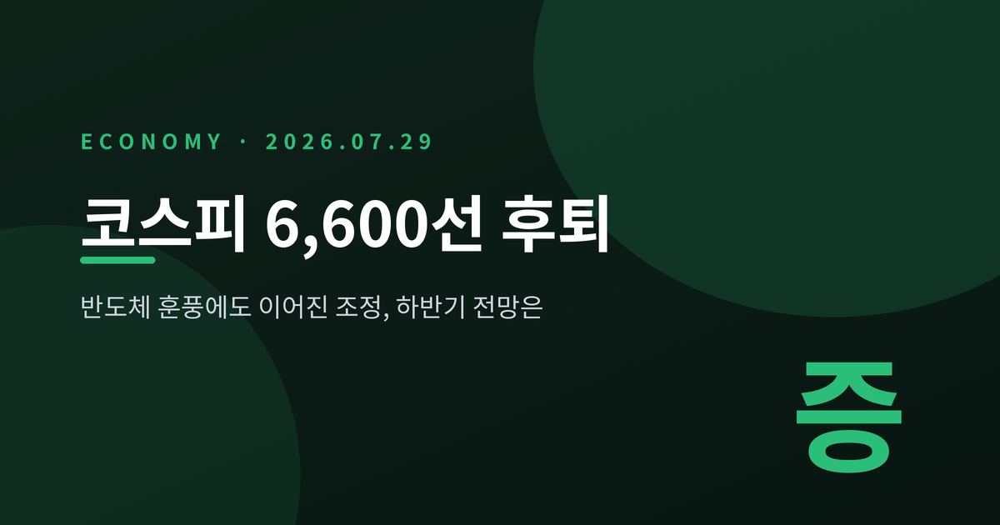
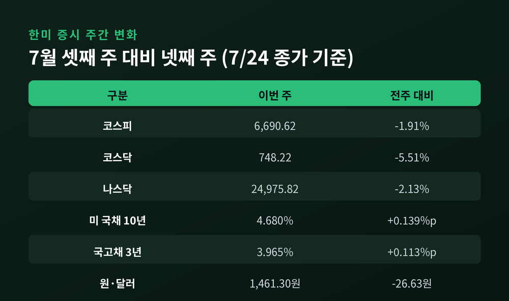
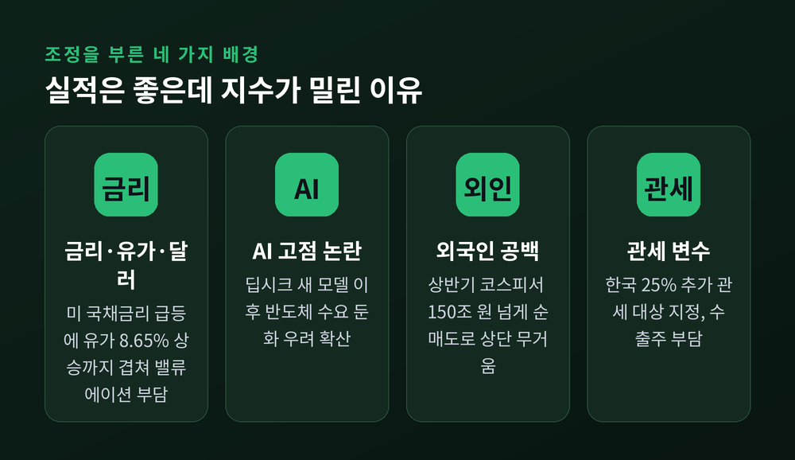
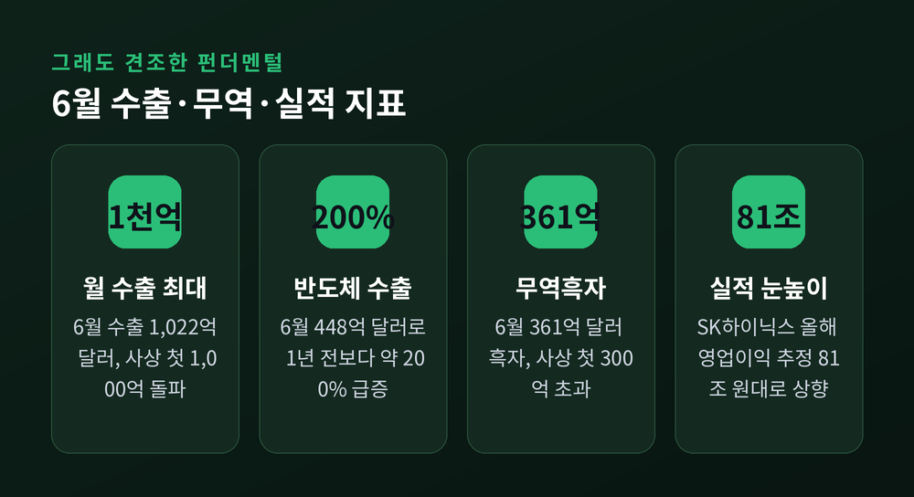
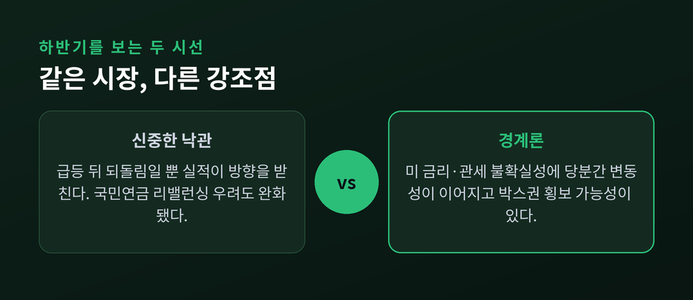
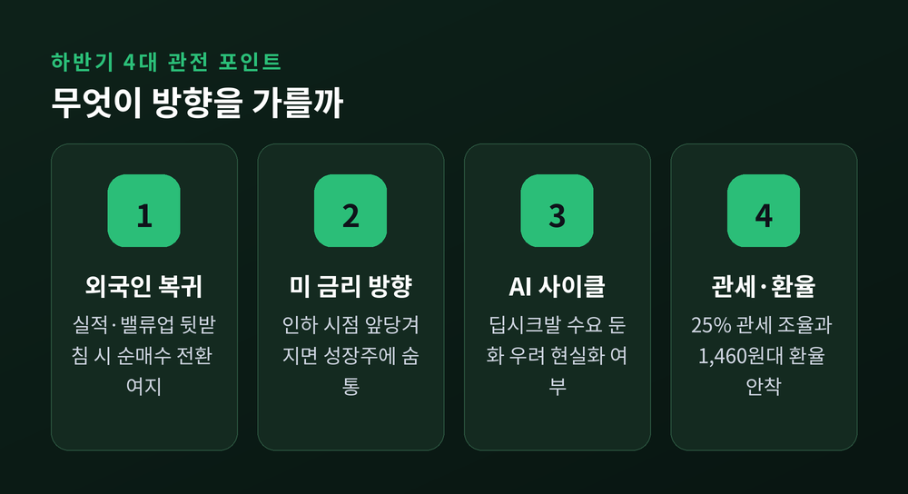

코스피 6,600선 후퇴, 반도체 훈풍에도 조정받는 이유와 하반기 전망
이번 글에서는 7월 넷째 주 한미 증시가 동반 약세를 보인 배경을 정리해 보겠습니다.
반도체 실적은 사상 최고 수준인데 지수는 왜 밀렸는지, 하반기는 어떻게 볼지에 초점을 맞춥니다.
숫자는 확인된 자료에 근거해 담담히 짚겠습니다.
지수 하나만 보고 놀라기보다, 그 안에서 무엇이 움직였는지를 함께 읽어보려 합니다.

한 주 동안 무슨 일이 있었나
코스피는 7월 16일 6,820.60에서 7월 24일 6,690.62로 마감했습니다.
한 주 만에 129.98포인트, 1.91% 내렸습니다.
주중 한때는 6,600선까지 밀렸습니다.
코스닥은 낙폭이 더 컸습니다.
791.81에서 748.22로, 5.51% 하락했습니다.
지수보다 체력이 약한 중소형 성장주부터 흔들렸다는 뜻입니다.
성장주는 미래 이익을 당겨와 평가받는 만큼, 금리가 오르면 가장 먼저 타격을 받습니다.
미국도 같은 방향이었습니다.
기술주 중심의 나스닥이 2.13% 빠지며 조정을 이끌었고, 나스닥 종합지수는 24,975.82로 내려앉았습니다.
S&P500은 0.60%, 다우존스는 0.38% 하락해 세 지수가 나란히 뒷걸음쳤습니다.
특이한 점은 환율이었습니다.
원·달러 환율은 오히려 26원 넘게 내려 1,461.30원을 기록했습니다.
원화가 강해졌는데도 지수는 지켜지지 않았습니다.
국고채 3년물 금리가 3.852%에서 3.965%로 오르고, 국제유가와 달러가 함께 뛴 탓입니다.
달러 강세를 보여주는 달러지수는 101.48로 올랐고, 엔화는 달러당 163엔대까지 밀렸습니다.
환율 하나만으로 방향을 설명할 수 없는 한 주였습니다.
정리하면, 국채금리와 달러, 유가가 동시에 오르며 위험자산 전반의 부담이 커진 국면이었습니다.

반도체는 좋은데 왜 조정일까
투자자 입장에서 가장 헷갈리는 대목입니다.
6월 반도체 수출은 448억 달러로, 1년 전보다 약 200% 급증했습니다.
전체 수출도 사상 처음 월 1,000억 달러를 넘어섰습니다.
실적만 보면 훈풍인데, 지수는 반대로 움직였습니다.
이유는 하나가 아니었습니다.
첫째, 금리·유가·달러가 동시에 올랐습니다.
미국 국채 10년물 금리가 4.541%에서 4.680%로, 2년물도 4.172%에서 4.335%로 뛰었습니다.
국제유가는 한 주 새 8.65% 급등해 배럴당 88달러를 넘어섰습니다.
금리가 오르면 성장주의 밸류에이션 부담이 커지고, 강한 달러는 신흥국 증시에서 자금을 빼내는 힘으로 작용합니다.
둘째, 이른바 'AI 고점 논란'입니다.
중국의 딥시크가 새 모델을 내놓은 뒤, AI 투자와 반도체 수요가 예상보다 빨리 식을 수 있다는 우려가 번졌습니다.
상반기에 코스피가 90% 넘게 오른 터라, 차익을 실현하려는 손길도 많았습니다.
셋째, 외국인의 빈자리입니다.
상반기 외국인은 코스피에서만 150조 원 넘게 순매도했습니다.
그동안 지수는 개인과 기관의 힘으로 버텨왔던 셈입니다.
사려는 큰손이 빠진 시장은 작은 충격에도 흔들리기 쉽습니다.
그만큼 외국인의 복귀 여부가 하반기 방향을 좌우할 열쇠로 꼽힙니다.
여기에 한국이 25% 추가 관세 대상국으로 지정된 대외 변수까지 겹쳤습니다.

그래도 바닥의 체력은 남아 있습니다
조정의 이유가 많다고 해서, 이번 하락을 위기로만 볼 일은 아닙니다.
펀더멘털은 오히려 단단한 편입니다.
6월 무역수지는 361억 달러 흑자로, 사상 처음 300억 달러를 넘었습니다.
수출을 이끈 주역은 역시 반도체였습니다.
전체 수출에서 반도체가 차지하는 비중이 38.7%까지 올라, 1년 새 15포인트 넘게 커졌습니다.
증권가의 눈높이도 높아지고 있습니다.
한 증권사는 SK하이닉스의 올해 영업이익 추정치를 81조 원대로 상향했습니다.
또 다른 증권사는 하반기에 반도체 가격이 거의 오르지 않아도 현재의 이익 전망은 지킬 수 있다고 봤습니다.
AI 시대의 핵심으로 자리 잡은 고대역폭메모리, 즉 HBM이 그 밑바탕입니다.
예전엔 '코리아 디스카운트'라는 말이 늘 따라붙었습니다.
지금은 자사주 매입과 소각, 배당 확대 같은 기업가치 제고 움직임이 그 그늘을 조금씩 걷어내고 있습니다.
상반기 코스피가 크게 오른 데에는 이런 구조적 변화가 자리합니다.
물론 아직 완벽하지는 않습니다.
관세와 금리 같은 외생 변수는 우리가 통제하기 어렵습니다.
좋은 실적이 주가로 곧장 이어지지 않는 구간도 분명히 존재합니다.
그래서 지금은 실적과 수급을 나누어 볼 필요가 있습니다.

두 갈래로 갈리는 시선
시장의 해석은 대체로 두 방향입니다.
한쪽은 신중한 낙관입니다.
"급등 뒤 되돌림일 뿐, 실적이 받쳐주니 방향은 훼손되지 않았다"는 시각입니다.
하반기 부담으로 꼽히던 국민연금의 리밸런싱 물량 우려도 이번 조정으로 완화됐습니다.
국내 주식 비중이 목표 범위 안으로 돌아오면서, 대규모 매도 부담이 줄었기 때문입니다.
다른 한쪽은 경계론입니다.
미국 금리의 향방과 관세 협상이 불확실한 만큼, 당분간 변동성이 이어질 수 있다는 것입니다.
지수가 한 방향으로 크게 오르기보다, 한동안 좁은 구간에서 오르내릴 수 있다는 관측도 나옵니다.
어느 쪽도 틀린 말은 아닙니다.
같은 시장을 두고 강조점이 다를 뿐입니다.
낙관은 실적을, 경계는 대외 변수를 먼저 봅니다.
둘을 함께 저울에 올려두는 편이 균형에 가깝습니다.

하반기, 무엇을 지켜봐야 하나
결국 하반기의 열쇠는 몇 가지 변수로 좁혀집니다.
첫째는 외국인의 귀환 여부입니다.
실적과 밸류업이 뒷받침되면 순매수로 돌아설 여지가 있습니다.
반대로 관망이 길어지면 지수의 상단은 계속 무거울 것입니다.
둘째는 미국 국채금리의 방향입니다.
금리 인하 시점이 앞당겨지면 성장주에 숨통이 트입니다.
셋째는 AI 투자 사이클의 지속성입니다.
딥시크발 우려가 기우로 판명될지, 실제 수요 둔화로 이어질지가 관건입니다.
넷째는 관세 협상과 환율입니다.
25% 관세가 어떻게 조율되는지, 1,460원대 환율이 안착하는지도 함께 봐야 합니다.
이 네 가지는 서로 얽혀 있어, 하나가 풀리면 나머지도 함께 움직일 가능성이 큽니다.

정리하면 이렇습니다.
이번 조정은 실적이 나빠서가 아니라, 금리·유가·수급이 한꺼번에 흔들린 결과에 가깝습니다.
"펀더멘털은 견조하되, 대외 변수가 발목을 잡는다."
결국 하반기 증시는 그 사이의 줄다리기가 될 것입니다.
반도체가 다시 시장의 신뢰를 증명해 낼 수 있을지, 조금 더 지켜봐야 할 때라고 생각합니다.
※ 이 글은 정보 제공을 위한 것이며, 특정 종목이나 상품의 투자를 권유하는 글이 아닙니다. 투자 판단과 그 책임은 투자자 본인에게 있습니다.